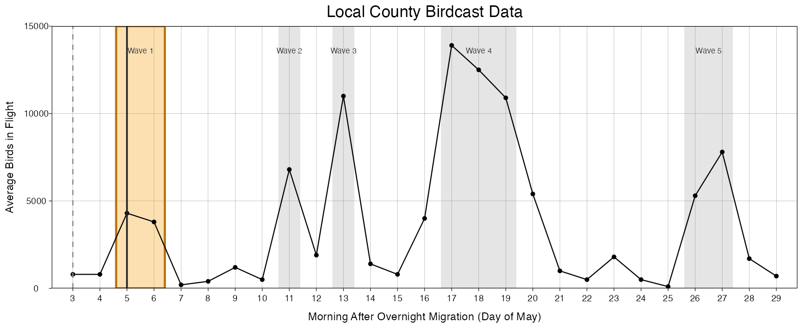
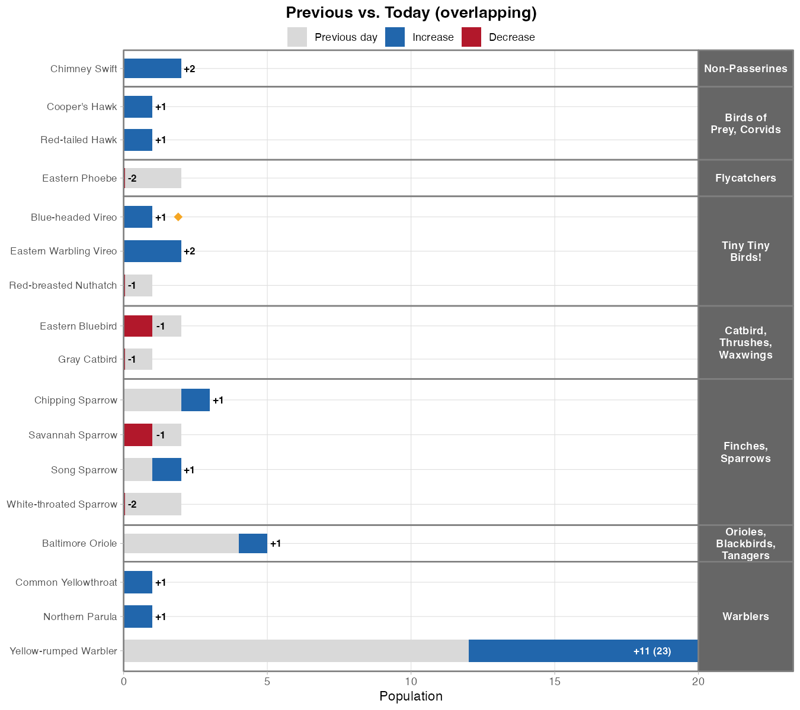
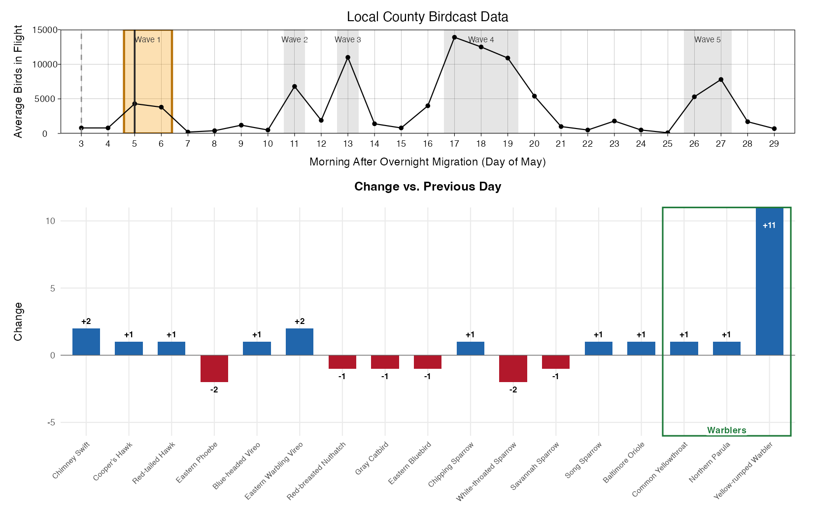
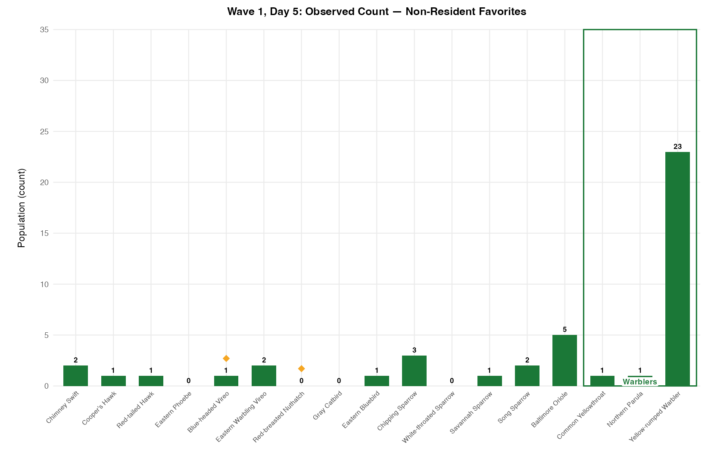
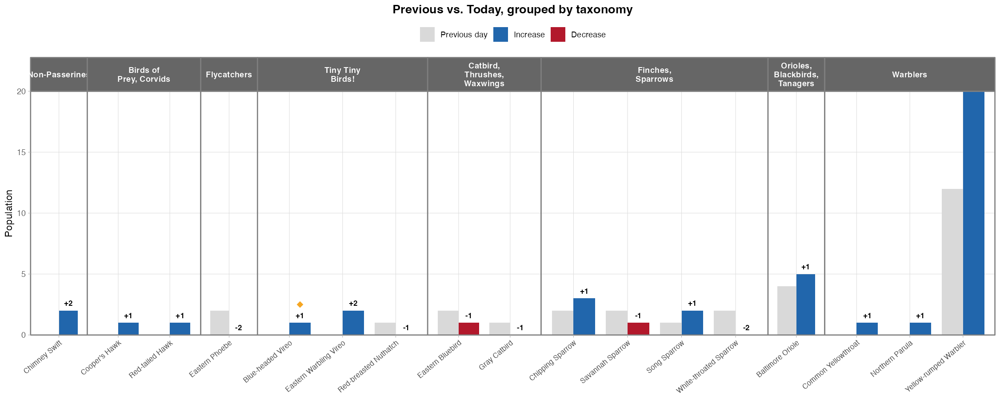
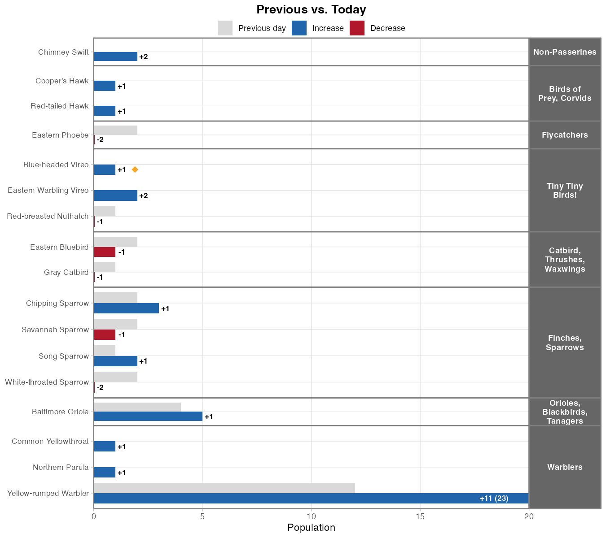

Wave by wave
Which birds came in each wave?
EDITORIAL NOTE: I need to list which species are excluded
Claude filling in, TO EDIT: These bar charts only cover my "favorites, non-resident" list — not all 72 species. Starting from the full list, I dropped a handful of very common species (Mourning Dove, Turkey Vulture, Northern Mockingbird, American Goldfinch, Brown-headed Cowbird, Common Grackle, Northern Cardinal, European Starling, American Robin) and two whole groups (cormorants, corvids), then kept only the migrants from what was left — so any residents that happened to be on the favorites list are excluded here too.
How to read this graph
Top panel: the regional BirdCast migration data. The orange band marks the wave shown below; the black vertical line marks the day I'm reporting on.
Bottom panel: what I actually saw that day, one bar per species, compared against my most recent previous outing (not necessarily the day right before -- see caveats).
- Blue bar — count went up since my last outing (the number is the increase).
- Red bar — count went down since my last outing (the number is the decrease).
- Grey — my most recent previous outing: the dashed vertical line in the top panel, the grey bar in the bar chart.
- Orange diamond ◆ — an "uncommon" species: observed no more than 3 times over the entire month.
Caveats:
Some "previous" days may not have been on a wave, but the focus here is on composition of the waves. This is because I was interested in new arrivals specifically after waves, and the most representative "change" would be from the most recent observations, regardless of whether it was on a wave day or not. The number of calendar days between the "previous" and "current" observations also varies. This inconsistency is not ideal, and if I could improve this study I would go every single day, and compare every wave to 1 calendar day prior.
Observations
In general, large regional waves corresponded with greater species diversity (wave 4) and higher counts (wave X).
But not always. Wave 3 was one of the highest migration nights of the entire month, but I saw dramatically fewer birds that morning compared to the previous wave. Why? The massive movement detected on radar may have been birds PASSING THROUGH or LEAVING, not necessarily birds landing as dawn broke.


texttexttext
Three other styles
I made a few different versions of the above graph in attempts to make it clear and not too busy, but capture as much information as possible.

No taxonomy grouping. This was originally standalone, but I think the absolute counts are important, so I added the companion graph on the right.

Shows actual population counts. No grouping.

Previous and today drawn as two separate bars side by side. Has taxonomy(ish) grouping.

More or less identical to Style B, but vertical bars